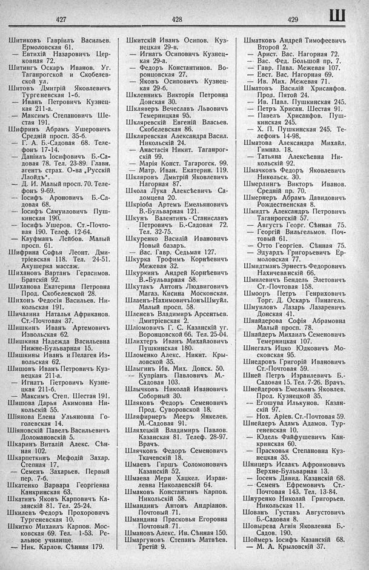

Лист источника 493
Скан

Распознанный текст
427
428
429
Ш
Шитиковъ Гавріилъ Васильевъ.
Ермоловская 61.
— Евтихій Назаровичъ Цер-
ковная 72.
Шитингъ Оскаръ Иванов. Уг.
Таганрогской и Скобелев-
ской ул.
Шитовъ Дмитрій Яковлевичъ
Тургеневская 1-б.
— Иванъ Петровичъ Кузнец-
кая 211-а.
— Максимъ Степановичъ Ше-
стая 191.
Шифринъ Абрамъ Ушеровичъ
Средній просп. 35-б.
— Г. А. Б.-Садовая 68. Теле-
фонъ 17-14.
— Даніилъ Іосифовичъ Б.-Са-
довая 78. Тел. 23-89. Главн.
агентъ страх. О-ва „Русскій
Ллойдъ“.
— Д. И. Малый просп. 70. Теле-
фонъ 9-69.
— Іосифъ Ароновичъ Б.-Са-
довая 68.
— Іосифъ Самуиловичъ Пуш-
кинская 190.
— Іосифъ Ушеров. Ст.-Почто-
вая 190. Телеф. 12-64.
— Кауфманъ Лейбов. Малый
просп. 61.
Шифрина Софья Леонт. Дми-
тріевская 118. Тел. 24-51.
Акушерка массаж.
Шихановъ Вартанъ Герасимов.
Братскій 92.
Шиханова Екатерина Петровна
Прод. Скобелевской 28.
Шихонъ Федосія Васильев. Ни-
кольская 191.
Шичалина Наталья Африканов.
Ст.-Почтовая 37.
Шишкинъ Иванъ Артемовичъ
Извольская 62.
Шишкина Надежда Васильевна
Нижне-Бульварная 15.
Шишкины Иванъ и Пелагея Из-
вольская 62.
Шишовъ Иванъ Петровичъ Куз-
нецкая 211-а.
— Игнатъ Петровичъ Кузне-
цкая 211-б.
— Максимъ Степ. Шестая 191.
Шишова Дарья Акимовна Ни-
кольскій 55.
Шіянова Елена Ульяновна Го-
голевская 14.
Шіяновскій Павелъ Васильевичъ
Доломановскій 5.
Шкаринъ Виталій Алекс. Сѣн-
ная 102.
Шкарпеткинъ Мефодій Захар.
Степная 17.
— Семенъ Захарьев. Первый
пер. 7-б.
Шкатенко Варвара Георгіевна
Канкринская 63.
Шкатинъ Яковъ Карповичъ Ка-
занскій 81. Тел. 25-24.
Шкилевъ Федоръ Прохоровичъ
Тургеневская 10.
Шкитко Михаилъ Карпов. Мос-
ковская 69. Тел. 1-53. Ре-
альное училище.
— Ник. Карлов. Сѣнная 179.
Шкитскій Иванъ Осипов. Куз-
нецкая 29-в.
— Игнатъ Осиповичъ Кузнец-
кая 29-а.
— Федоръ Константинов. Во-
ронцовская 27.
— Яковъ Осиповичъ Кузнец-
кая 29-б.
Шкленникъ Викторія Петровна
Донская 30.
Шкляверъ Вечеславъ Львовичъ
Темерницкая 95.
Шкляревскій Евгеній Власьев.
Скобелевская 86.
Шкляревская Александра Васил.
Никольскій 24.
— Анастасія Никит. Таганрог-
скій 99.
— Марія Конст. Тагарогск. 99.
— Матр. Иван. Екатерин. 119.
Шкляровъ Дмитрій Яковлевичъ
Нагорная 87.
Школа Лука Алексѣевичъ Са-
домцева 20.
Шкріоба Артемъ Емельяновичъ
В.-Бульварная 121.
Шкунъ Валентинъ - Станиславъ
Петровичъ Б.-Садовая 72.
Тел. 32-75.
Шкуренко Василій Ивановичъ
Новый базаръ.
— Вас. Гавр. Седьмая 127.
Шкурка Трофимъ Корнѣевичъ
Межевая 32.
Шкуркинъ Андрей Корнѣевичъ
В.-Бульварная 58.
Шкутакъ Антонъ Людвиговичъ
Магаз. Кисина Московская.
Шлаенъ-НахимовичъІонъШмуйл.
Малый просп. 58.
Шленевъ Владимиръ Арсентьев.
Дмитріевская 2.
Шліомовичъ Г. С. Казанскій уг.
Воронцовской 66. Тел. 25-04.
Шлихтеръ Иванъ Михайловичъ
Пушкинская 180.
Шломенко Алекс. Никит. Кры-
ловской 35.
Шлыгинъ Ив. Мих. Донск. 50.
-- Купріанъ Павловичъ М.-
Садовая 103.
Шлычковъ Николай Ивановичъ
Соборный 30.
Шляковъ Федоръ Семеновичъ
Прод. Суворовской 18.
Шляфирнеръ Мееръ Янкелев.
М.-Садовая 91.
Шляхецкій Владимиръ Павлов.
Казанская 81. Телеф. 28-97.
Врачъ.
Шлячковъ Федоръ Семеновичъ
Ткачевскій 18.
Шмаевъ Гиршъ Соломоновичъ
Казанскій 52.
Шмаева Мери Хацкел. Израи-
левна Николаевскій 64.
Шмаковъ Константинъ Карпов.
Никольскій 58.
Шмандинъ Антонъ Андріанов.
Почтовый 71.
Шмандина Прасковья Егоровна
Почтовый 71.
Шмановъ Алекс. Ив. Сѣнная 150.
Шмаргуновъ Степанъ Матвѣев.
Третій 9.
Шматковъ Андрей Тимофеевичъ
Второй 2.
— Арист. Вас. Нагорная 72.
— Вас. Фед. Большой пр. 7.
— Гавр. Павл. Межевая 107.
— Евст. Вас. Нагорная 69.
— Ив. Мих. Межевая 71.
Шматовъ Василій Хрисанфов.
Прод. Пятой 24.
— Ив. Павл. Пушкинская 245.
— Петръ Хрисан. Шестая 91.
— Павелъ Хрисанфов. Пуш-
кинская 245.
— Х. П. Пушкинская 245. Те-
лефонъ 14-98.
Шматова Александра Михайл.
Гимназ. 18.
— Татьяна Алексѣевна Ни-
кольскій 92.
Шмачковъ Федоръ Яковлевичъ
Никольск. 30.
Шмерлингъ Викторъ Иванов.
Средній пр. 70.
Шмернеръ Абрамъ Давидовичъ
Рождественская 8.
Шмидтъ Александръ Петровичъ
Таганрогскій 57.
— Августъ Георг. Сѣнная 75.
— Георгій Вильгельмов. Поч-
товый 61.
— Отто Георгіев. Сѣнная 75.
— Эдуардъ Григорьевичъ Ер-
моловская 77.
Шмидтманъ Эрнестъ Федоровичъ
Нахичеванскій 66.
Шмилевичъ Бендель Элетовичъ
Ст.-Почтовая 158.
Шмооръ Петръ Генриховичъ
Торг. Д. Оскаръ Пинагель.
Шмуиловъ Лазарь Лазаревичъ
Донская 41.
Шнайдерова Софія Абрамовна
Малый просп. 78.
Шнайдеръ Михаилъ Семеновичъ
Темерницкая 107.
Шнегалъ Ицко Юдковичъ Мо-
сковская 95.
Шнедровъ Григорій Ивановичъ
Ст.-Почтовая 59.
Шней Петръ Израилевичъ Б.-
Садовая 15. Тел. 7-26. Врачъ.
Шнейдеровъ Емельянъ Яковлев.
Прод. Кузнецкой 35.
-- Егошува Илькунов. Казан-
скій 97.
— Нох. Аріев. Ст.-Почтовая 59.
Шнейдеръ Адамъ Адамов. Тур-
геневская 10.
— Юдель Файфушевичъ Кан-
кринская 60.
— Прасковья Степановна Куз-
нецкая 35.
Шницеръ Исаакъ Афроимовичъ
Верхне-Бульварная 13.
— Іосенъ Давид. Казанскій 68.
— Семенъ Ефремовичъ Ст.-
Почтовая 143. Тел. 13-84.
Шнуренко Николай Григорьев.
Никольская 11.
Шованъ Густавъ Августовичъ
Б.-Садовая 8.
Шовырева Агнія Яковлевна Б.-
Садов. 190.
Шоймеръ Іосифъ Казанскій 68.
— М. А. Крыловскій 37.